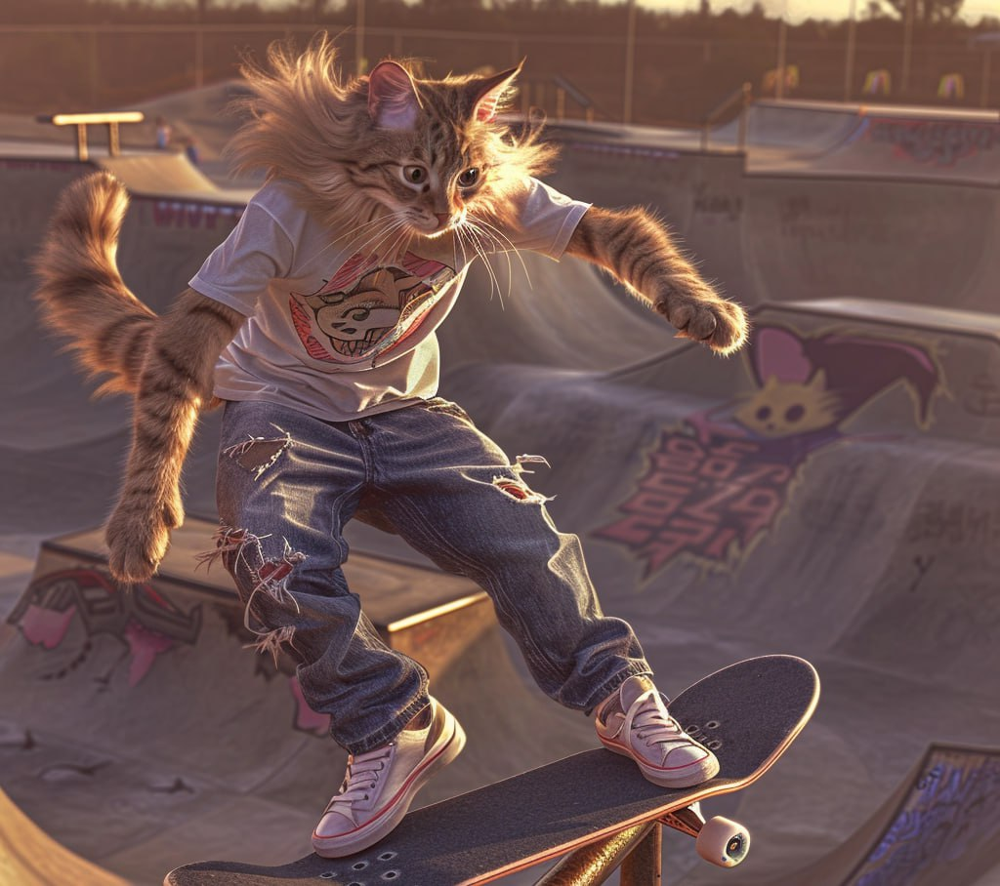

Skipuf
Я программист, в основном пишу на Python, но недавно начал углубляться во фронтенд, осваиваю JavaScript и всё, что связано с созданием сайтов. В свободное время катаюсь на скейте — это мой способ перезагрузиться и отвлечься от кода. Ещё начал учиться играть на электрогитаре, потому что рок — это то, что я слушаю с детства, и всегда хотелось влиться в эту атмосферу не только как слушатель.
А ещё у меня есть телеграм-канал, где я выкладываю картинки с котами, которые заменяют людей в разных ситуациях — такой забавный арт-проект. Коты в костюмах, коты на встречах, коты как рок-звёзды — юмор и мимимишность в одном флаконе!